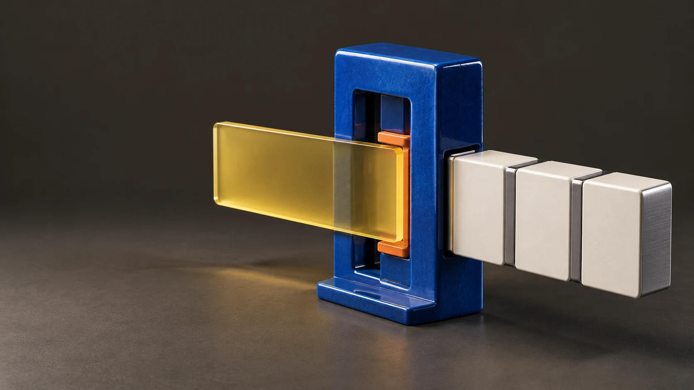

Application Intent Protocol · open source
Declare what your app needs.
Stop writing an endpoint per screen. The caller expresses the data and action it needs; the AIP Runtime runs it inside the rules your server sets.

export const listMyOrders = intent({
read: "orders",
where: { owner: "$actor" },
});
// no new endpoint. the server's policy still decides.
const orders = await aip.run(listMyOrders);01 — Principles
Strict inside. Simple outside.
Freedom to ask
Callers express intent
Data and actions are declared next to the code that needs them — not hidden behind one more endpoint.
Authority to run
The server decides
Every intent passes the server's policy. Authentication, rules and integrity stay on the server.
Clear defaults
One obvious way
Predictable structure that people and AI coding agents read the same way.
02 — Architecture
One request, one path
Yellow is what you declare. Blue is AIP. Tangerine is the line the server never lets you cross.
- frontendYour screen
- intentlistMyOrders
- permissionowner = actor
- executionplan · run
- dataorders
Start with a working project.
Pick a runtime, a database and a language. Download, run, read the code.